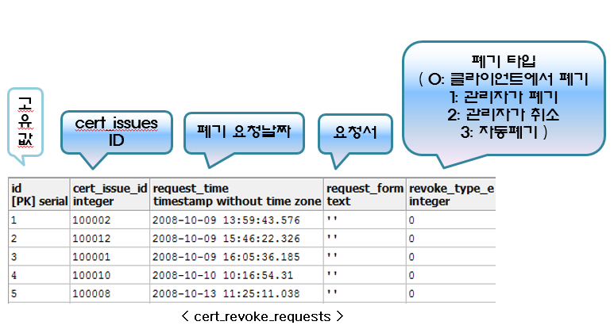

인증서 발급현황 (cert_issues, certificates, cert_requests, cert_revoke_requests)
-
인증서 발급현황 페이지는 ShadowCube 클라이언트에서 인증서 발급한 사용자들의 목록을 볼 수 있다.
※ 테이블 설명
-
ShadowCube 사용자가 인증 서 발급 시, 입력한 정보는 cert_issues 테이블에 저장이 된다.
-
발급 요청에 대한 정보는 cert_requests 테이블에, 발급 완료 후 개인 인증서는 certificates 에 저장이 된다.
-
인증서 폐기에 대한 정보는 cert_revoke_requests 테이블에 저장이 된다.

이전